CoE Workshop
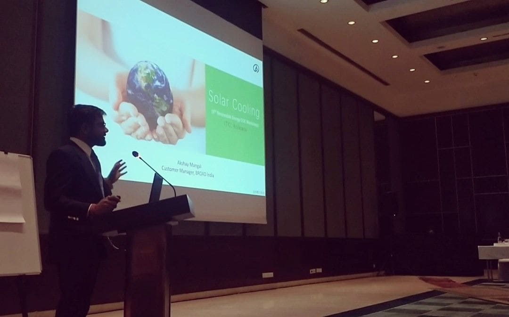During the 6th Renewable CoE Workshop of ITC group, I delivered an engaging and informative expert talk on "Solar Cooling & Energy Efficient Practices." The presentation highlighted cutting-edge technologies and best practices for harnessing solar energy to achieve sustainable cooling solutions and promote energy efficiency. Participants gained valuable insights into the potential of solar-powered cooling systems in mitigating climate change and fostering a greener future.
Event by CREDA and BEE
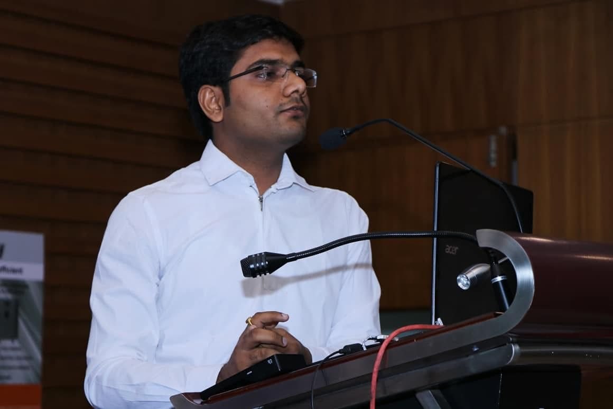At the event jointly organized by CREDA and BEE and initiated by the Ministry of Power, Government of India, we delved into crucial Energy Efficient practices for HVAC systems. The discussion emphasized the significance of implementing energy-saving measures and adopting innovative technologies to comply with the Perform, Achieve, and Trade (PAT) scheme, promoting sustainability and reducing the environmental impact of HVAC operations.
Lecture at Ahmedabad Management Association
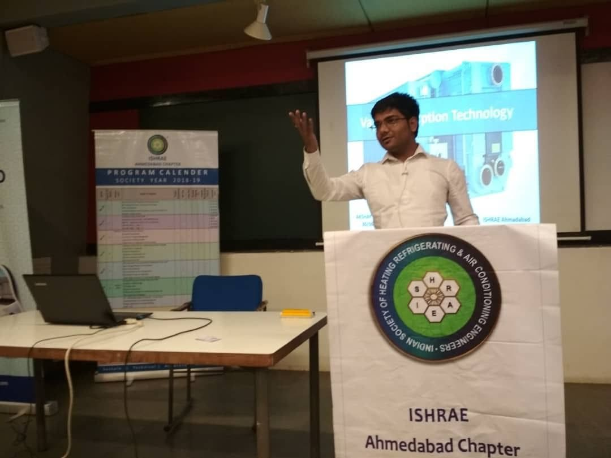I had the privilege of delivering a comprehensive lecture on VAPOR ABSORPTION MACHINE technology at the Ahmedabad Management Association. Hosted by the ISHRAE Ahmedabad Chapter, the lecture provided valuable insights into this advanced cooling technology, its environmental benefits, and its potential applications in achieving energy efficiency and sustainability goals in various industries.
Panel Discussion by IGSW
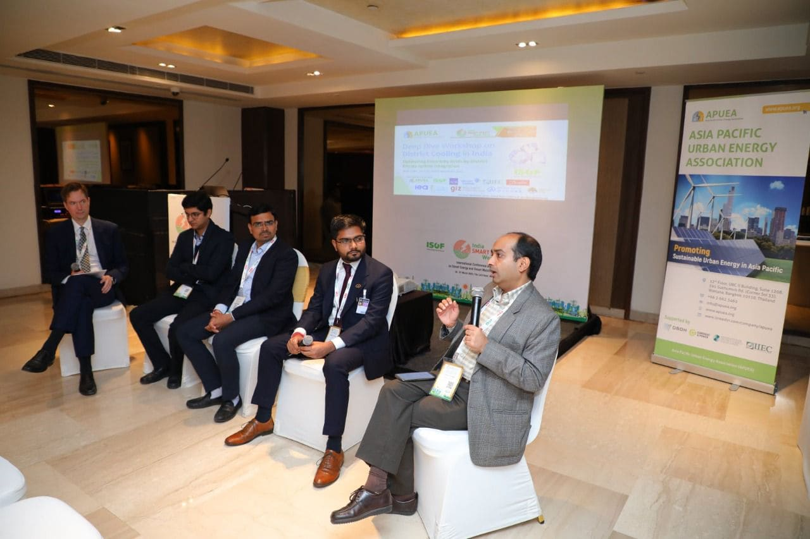I actively participated in a thought-provoking panel discussion on "District Cooling Potential in India" at the prestigious India Smart Utility Week 2020 (ISUW 2020). The event, organized by IGSW (India Green Building Council) and supported by APUEA (Asia Pacific Urban Energy Association), brought together experts and stakeholders to explore the immense potential of district cooling systems in India, fostering energy efficiency, and advancing sustainable urban development in the country. The panel discussion shed light on innovative approaches to harnessing district cooling solutions and their significant contributions to mitigating climate change and optimizing energy consumption.
International Workshop by BEE

I was honored to be part of the International Workshop on Energy Efficient Cooling, a prestigious event organized by the Bureau of Energy Efficiency (BEE), Government of India. The workshop, supported by the International Energy Agency (IEA) and the Super-efficient Equipment and Appliance Deployment (SEAD) initiative, facilitated discussions on cutting-edge technologies, policies, and best practices for promoting energy-efficient cooling solutions worldwide. Participants gained valuable insights into the global efforts to combat climate change and enhance sustainability in the cooling sector.
Technical Talk at event by ASHRAE
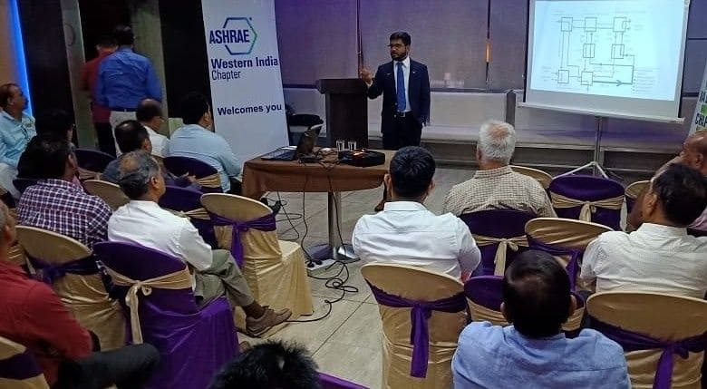As a distinguished speaker, I presented a technical talk on "Vapor Absorption and Brine Technology" at an event organized by ASHRAE Western India Chapter in Vadodara. The talk delved into the latest advancements and applications of these cooling technologies, emphasizing their role in promoting energy efficiency and sustainable practices in the HVAC industry. The event provided an excellent platform for knowledge exchange and networking among professionals and enthusiasts in the field of heating, ventilation, air conditioning, and refrigeration.
Visited HES 2018
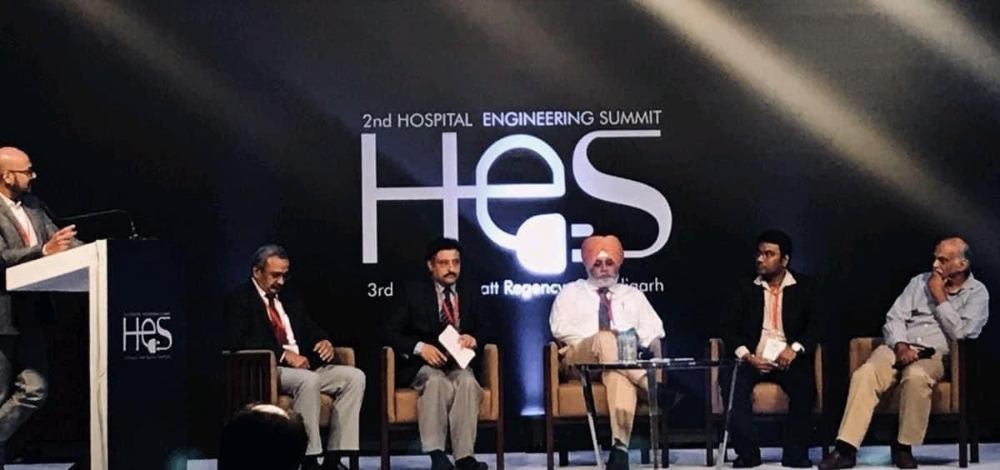During my visit to HES 2018, an event initiated by HOSMAC, the "Ayushman Bharat Scheme" (Modi Care) took center stage as a critical initiative to provide affordable and accessible medical facilities to all citizens. The program highlighted the government's efforts to improve healthcare infrastructure and services, ensuring that quality healthcare becomes accessible to every individual, especially those from economically vulnerable backgrounds. The event served as a platform for discussions, collaborations, and innovations aimed at strengthening India's healthcare ecosystem and achieving the goal of universal healthcare coverage.
Meeting Varendra Rawat ji and Shri Ambrish Parajiya ji
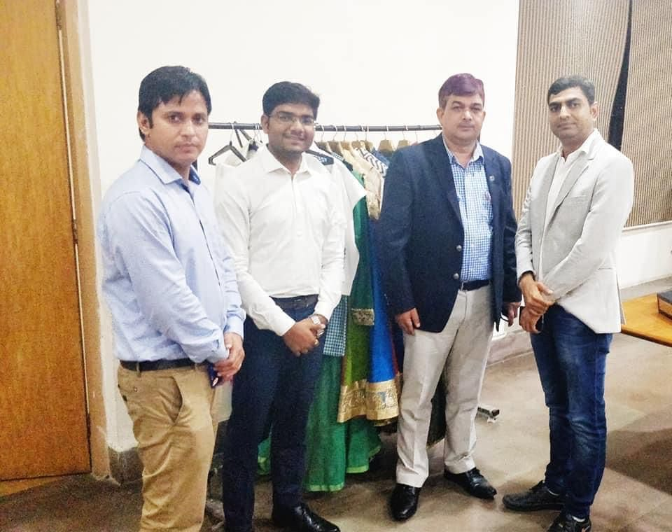It was a privilege to meet and engage with distinguished individuals like Shri Virendra Rawat ji, a Member of the United Nations Association of the USA, and Shri Ambrish T Parajiya ji, the Director of GAP Associates. Our meeting focused on Climate Clean's initiative towards promoting a zero-carbon lifestyle, emphasizing the importance of collective efforts in combating climate change and adopting sustainable practices for a greener and healthier future. The discussion served as an inspiring platform to exchange ideas and explore innovative solutions to address environmental challenges on a global scale.
Meeting Mr. Robbie Liu
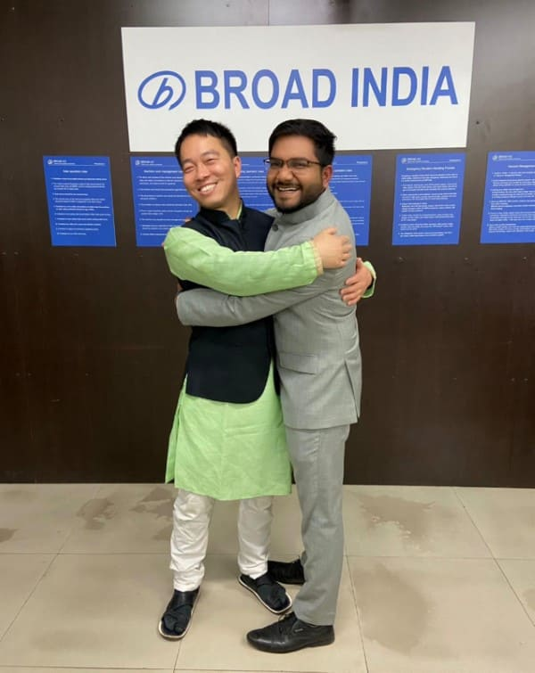It was a heartwarming experience to meet Mr. Robbie Liu, the General Manager of BROAD India. During the meeting, we had fruitful discussions about BROAD's contributions to sustainable technologies and their commitment to advancing energy-efficient solutions in the Indian market. Mr. Liu's passion for environmental stewardship and dedication to driving positive change left a lasting impression on all attendees.
Attended 2nd Atal Bihari Vajpayee Memorial Lecture
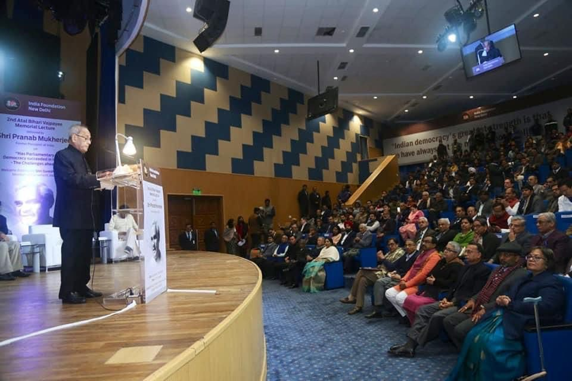It was an enriching experience to attend the 2nd Atal Bihari Vajpayee Memorial Lecture, delivered by the esteemed Bharat Ratna, Hon. Shri Pranab Mukherjee. The lecture, organized by India Foundation, provided deep insights into the vision and leadership of the late former Prime Minister, Atal Bihari Vajpayee, and fostered meaningful discussions on key issues shaping India's socio-political landscape. The event served as a tribute to a visionary leader and a platform to reflect on his enduring legacy in the nation's development.
Speech at BROAD TOWN, Changsha, China
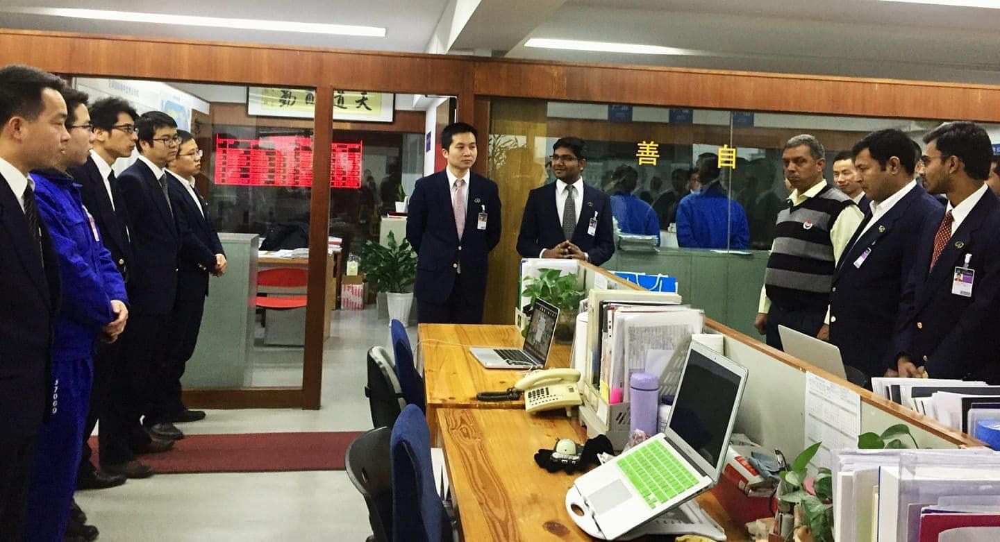It was an incredible honor to deliver a speech at BROAD TOWN in Changsha, China. During the address, I discussed the potential synergy between India's Environment Protection Philosophy and BROAD group's commitment to achieving a lower carbon footprint for sustainable development. The speech highlighted the significance of international collaboration in addressing global environmental challenges and paving the way for a greener and more sustainable future. The event served as a platform for fostering cross-border partnerships in the pursuit of environmental conservation and climate action.
Meeting Mr. Shrinivas Chamarthy
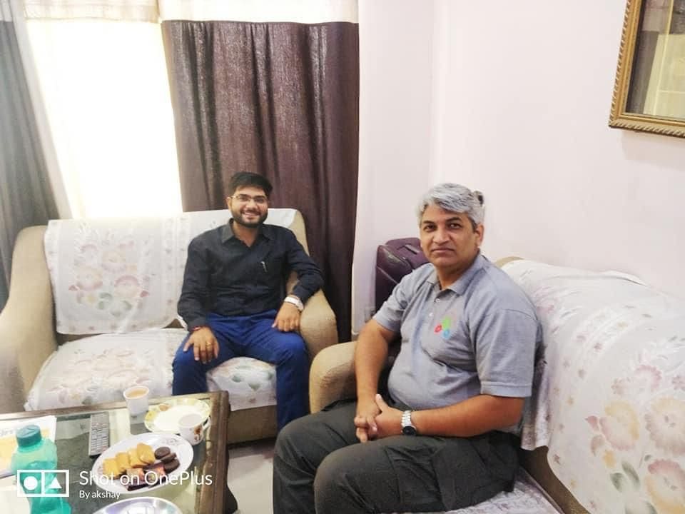It was truly a wonderful experience to have Mr. Shrinivas Chamarthy at my residence. During our meeting, I was inspired by his dedication and passion for innovation, as he shared insights about his involvement in 104 innovation projects. His efforts to travel across India and motivate students about "Make in India" exemplify his commitment to nurturing the spirit of entrepreneurship and driving positive change in the country's manufacturing landscape. Our discussion left a lasting impression, highlighting the power of individual initiatives in shaping a more self-reliant and innovative India.
Panel Discussion at Workshop by UN Environment
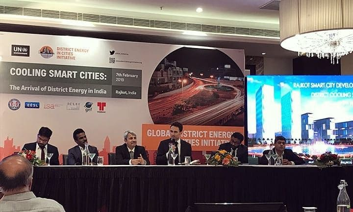I was honored to be a part of a panel discussion at a workshop on District Energy organized by the United Nations Environment Programme (UNEP). The engaging discussion delved into the importance of district energy systems in promoting energy efficiency, reducing greenhouse gas emissions, and fostering sustainable urban development. The workshop provided a valuable platform for experts and stakeholders to exchange ideas and explore innovative approaches to address energy challenges and climate change on a global scale.
Visiting UN House at New Delhi
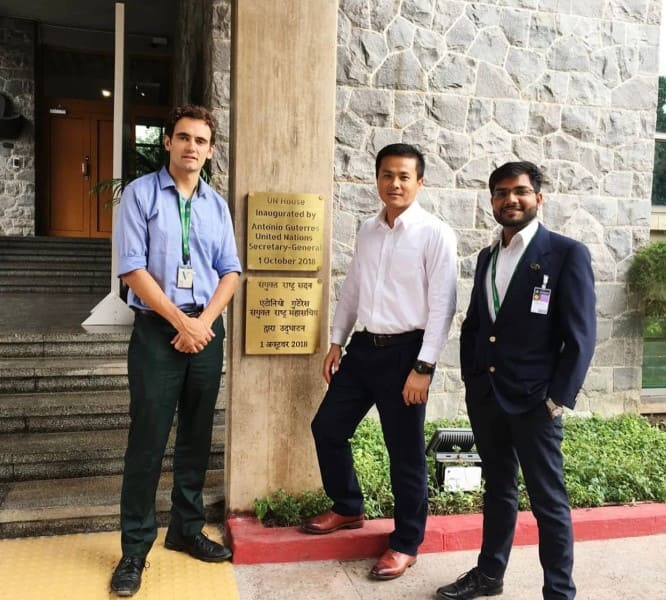During the visit to UN House in New Delhi, I had the pleasure of being accompanied by Mr. Jason, Sales Director of BROAD International. Together, we engaged in a fruitful discussion on District Energy Services (DES) for cooling with Mr. Ben, the Representative of UN Development Authority to India. The meeting focused on exploring collaborative efforts to promote energy-efficient cooling solutions and advance sustainable practices in the region, aligning with the UN's development objectives. The visit provided an excellent opportunity to strengthen partnerships between the private sector and international organizations to tackle environmental challenges and enhance energy sustainability.